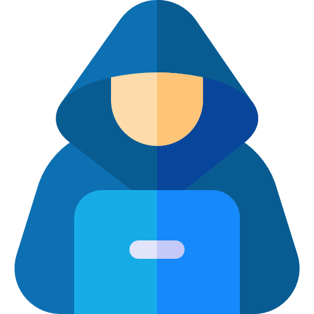

Introduction
Privacy was a sensitive issue long before the creation of computers.
Concerns have been raising, however, by the existence and widespread use of large computer databases that make it easy to gather information from different sources.
Privacy issues are further increased now that the Internet is making it easy for new data to be automatically collected and added to databases. The collection and use of online information has increased Internet users’ privacy concerns. Internet users worry about the unauthorized access to personal data online as well as the consequences of privacy loss.
Concerns have been raising, however, by the existence and widespread use of large computer databases that make it easy to gather information from different sources.
Privacy issues are further increased now that the Internet is making it easy for new data to be automatically collected and added to databases. The collection and use of online information has increased Internet users’ privacy concerns. Internet users worry about the unauthorized access to personal data online as well as the consequences of privacy loss.
Occurrences
Privacy invasions occur in three ways.
First, providing personal information when registering on websites increases the risk of privacy loss. For example, social media requires users to provide personal information to open an account that allows users to find contacts with similar interests and backgrounds, but the cost is exposing private information to third-party agencies.
First, providing personal information when registering on websites increases the risk of privacy loss. For example, social media requires users to provide personal information to open an account that allows users to find contacts with similar interests and backgrounds, but the cost is exposing private information to third-party agencies.
Spam Mails
Second, access can be gained to millions of users’ data through Spam emails and similiar messages. This is a growing issue related with electronic communication. Receiving e-mails from unknown sources is certainly an invasion of privacy. Some businesses feel that informing consumers about their products and services is going to increase their sales. However the other way around may be true. This e-mails are irritating and very annoying.
Hackers

Third, hackers distribute malware through the Internet to collect private information. Visiting unsafe websites and opening emails from unknown sources can result in the installation of malware.Today, even data entered into forms or contained in existing databases can be combined with transaction records and possibly as well as every click you’ve made through the Internet.
Virtual Private Networks
In the future, privacy concerns will likely increase further. A variety of technology tools help users protect their privacy during interactions with Websites and other Internet services, one of which being the VPN (Virtual Private Network). This network creates some kind of “tunnel” and adds a new layer of security to your browsing, but, if your device has already been affected with a malware, VPNs will be useless.
Identity Theft
There are two types of identity theft.
The first involves the thief using your personal information to open new accounts in your name, such as credit card accounts, or mobile phone services.
The second involves the thief using your personal information to get access to your existing accounts in order to run up a huge bill before you realize anything’s amiss. The Internet has made identity theft much easier than in the past. It’s now far easier to access personal data and rack up huge bills shopping online.
The first involves the thief using your personal information to open new accounts in your name, such as credit card accounts, or mobile phone services.
The second involves the thief using your personal information to get access to your existing accounts in order to run up a huge bill before you realize anything’s amiss. The Internet has made identity theft much easier than in the past. It’s now far easier to access personal data and rack up huge bills shopping online.
Identity Protection
The best way to protect yourself against identity theft in the real world is to keep all your identifying documents such as your passport, driver’s license and national identity cards safe and out of sight. The same is true for protecting yourself online and the best way to do this is to use a robust antivirus like Avast Free Antivirus to keep all your personal details out of the hands of thieves and hackers.
Other considerations:
● Do not give out your passwords or any data about your identity;
● Check everything you download to make sure it's not a malware;
Other considerations:
● Do not give out your passwords or any data about your identity;
● Check everything you download to make sure it's not a malware;
Privacy Laws
Familiarization with data security laws is a good idea whether you’re an individual consumer looking to go shopping online, a business collecting personal customer information, or someone who otherwise has anything else to do with the Internet.
The top issue is the potential for a Website to sell the details of online consumers to a third party, as well as the popular services' trackings.
The top issue is the potential for a Website to sell the details of online consumers to a third party, as well as the popular services' trackings.
User Data Collection
Google LLC and Microsoft, are two valuable service providers and search engines, which both have the same target, the end user. They are known for their data collections and trackings, especially when users provide their personal data. They have received significant criticism involving issues such as privacy.
There's a long list of data types they store, however, the popular ones are:
● Search queries, keyboard inputs, mouse clicking events with coordinates;
● Contact informations, Application usages;
● Device model and location (logical and physical);
● Sensitive information such as credit card numbers, in order to "improve" their Autofill forms;
There's a long list of data types they store, however, the popular ones are:
● Search queries, keyboard inputs, mouse clicking events with coordinates;
● Contact informations, Application usages;
● Device model and location (logical and physical);
● Sensitive information such as credit card numbers, in order to "improve" their Autofill forms;
Wrap Up
Everything we type on our keyboard is saved somewhere, either locally or exposed in the Internet.
Global privacy scandals have occurred during the past years, including the one where Facebook Inc. was involved.
It all started when Facebook granted some permissions to an application called
This was one of the largest Privacy violations in the Internet history, based on its affect level.
...our data is still floating around the Web,
they know about you, more than you do.
Global privacy scandals have occurred during the past years, including the one where Facebook Inc. was involved.
It all started when Facebook granted some permissions to an application called
This Is Your Digital Life. This application ended up collecting everything about users' personal information. Due to this, a reportedly 87 million accounts were affected and all the data was stored to Cambridge Analytica's Databases.
This was one of the largest Privacy violations in the Internet history, based on its affect level.
...our data is still floating around the Web,
they know about you, more than you do.